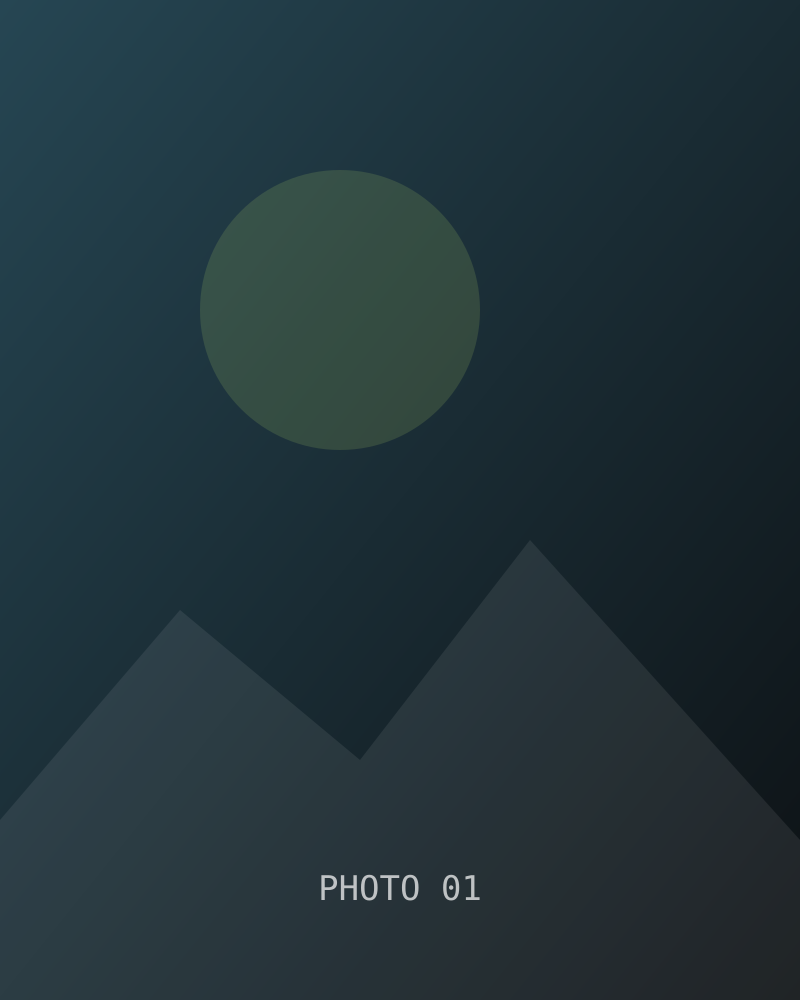
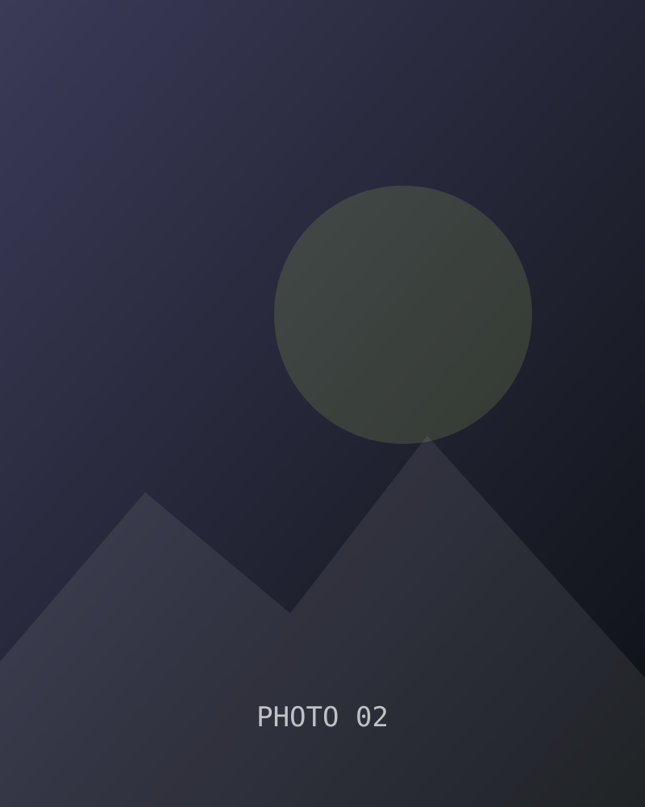
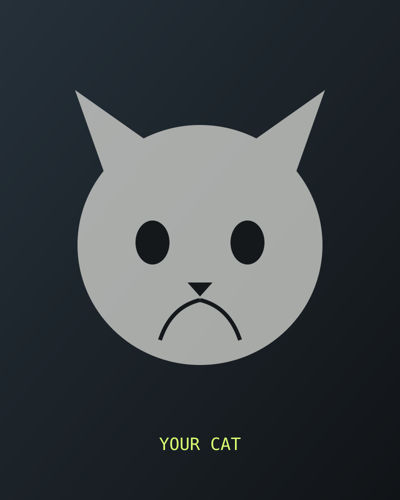

2026 —
Doctor of Information Technology
Current doctoral study · technology strategy, systems, and applied AI.
I build systems that help machines perceive, reason about, and act in the physical world.
ABOUT
My work sits at the intersection of machine learning, 3D perception, embodied intelligence, and real-world systems. I enjoy research questions that are technically deep but still lead to elegant, testable systems.
EDUCATION
Current doctoral study · technology strategy, systems, and applied AI.
Machine learning, deep learning, probability, and robot perception.
Foundations in computer science, systems, algorithms, and engineering.
RESEARCH
How much visual information does a robot actually need? When should it replan? What representations make perception useful for action?
Anticipating future interactions and motion from first-person observations.
Geometry from sparse, multimodal, or tactile observations — especially when sensing is incomplete.
VLA, world models, hierarchical policies, and event-driven perception–action loops.
BEV perception, sensor fusion, free-space, 6DoF pose, and mapping for autonomy.
SELECTED PROJECTS
Egocentric 3D target prediction with temporal modeling and multi-task supervision.
Visual + tactile reconstruction combining GelSight observations with geometric priors.
Temporal BEV modeling and geometric aggregation for autonomous driving perception.
A ground-up mobile robot build spanning hardware, control, sensing, ROS 2, and embodied learning.
EXPERIENCE
Production-facing engineering across ML infrastructure, observability, GPU systems, Kubernetes, internal AI tooling, and perception-adjacent workflows.
Research in 3D vision, egocentric perception, robotic sensing, reconstruction, and 6DoF pose estimation.
BEYOND WORK
I spend time behind a camera, sketching and painting, practicing violin, building robots, learning how machines work, and occasionally overthinking cars, lenses, coffee, and the perfect mechanical design.


MY CAT
Chief interruption officer. Keyboard inspector. Expert in embodied intelligence, especially when snacks are involved.
